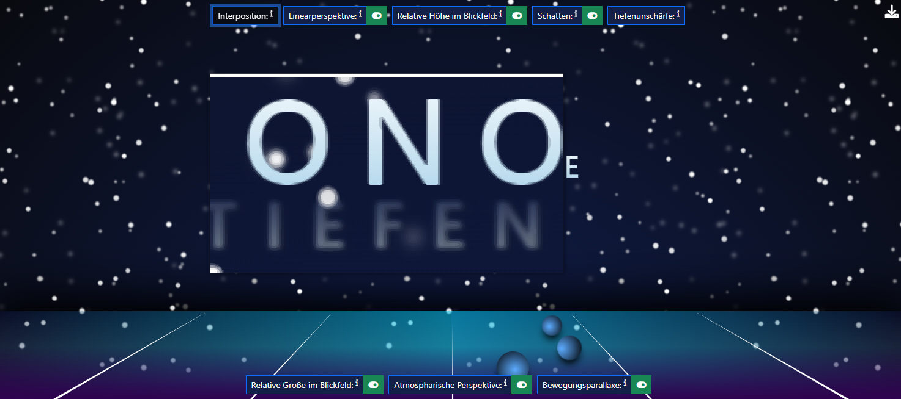
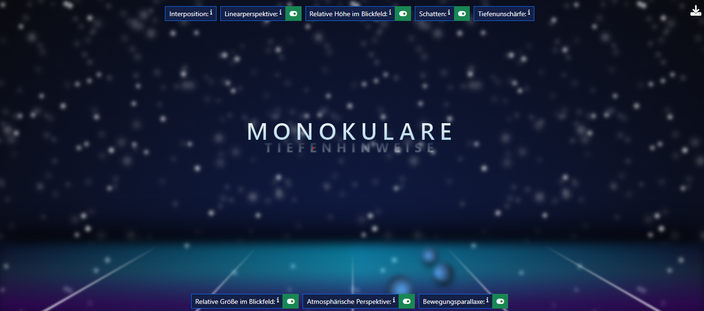
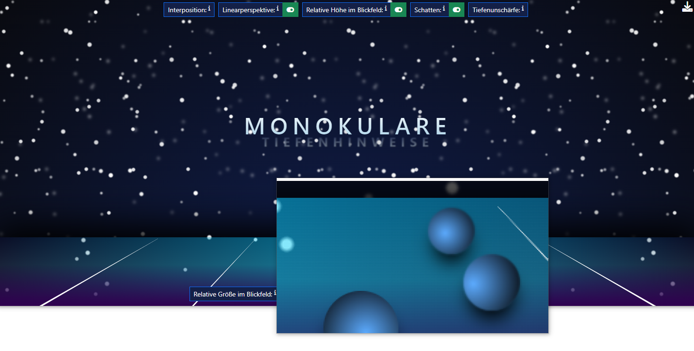
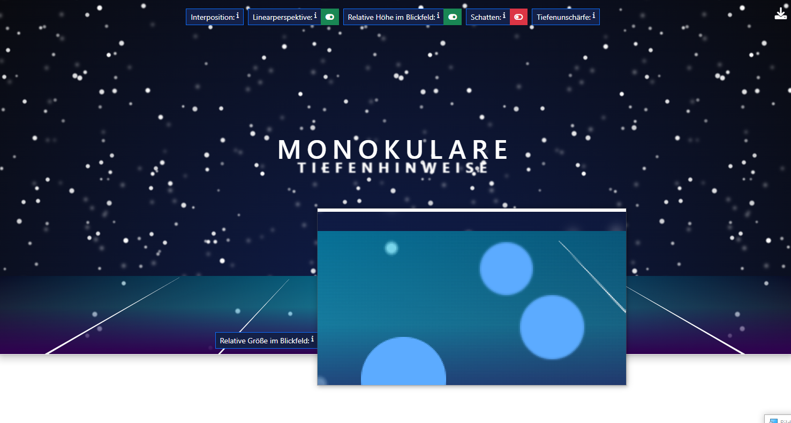
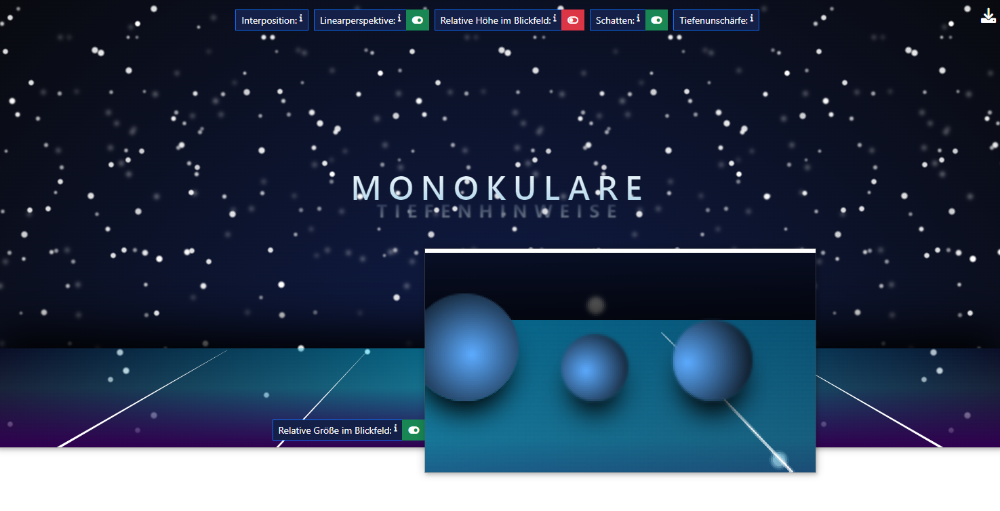
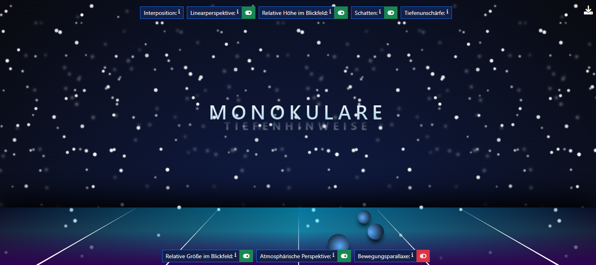
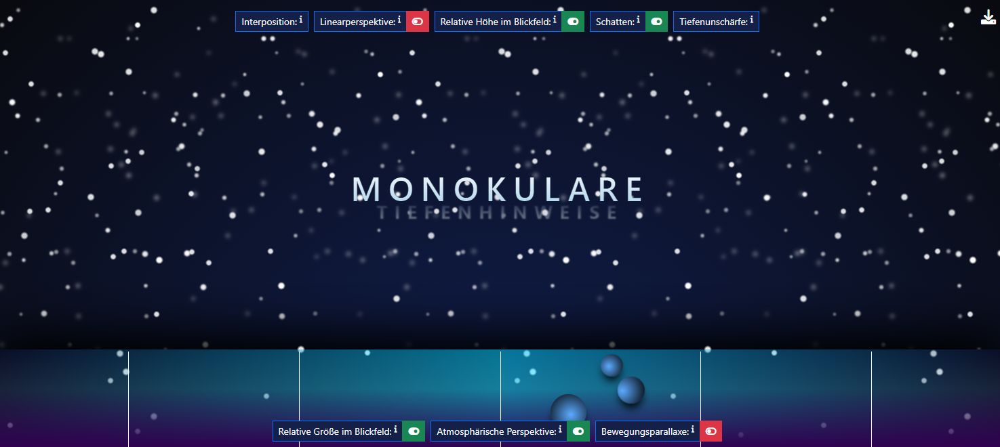
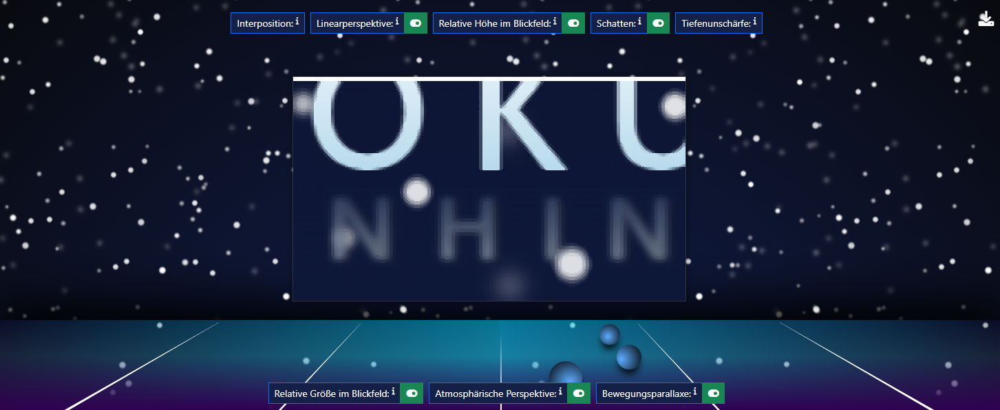

Entfernte Objekte haben bei gleicher realer Geschwindigkeit auf der Retina eine kleinere Winkelgeschwindigkeit als nahe Objekte.
Wenn sich ein Betrachtender und weitere Objekte im Raum parallel aneinander vorbeibewegen oder voneinander weg bewegen, so scheinen sich weiter entfernte Objekte langsamer zu bewegen als nahe Objekte. Grund dafür ist, dass die nahen Objekte in der gleichen Zeit einen weiteren Weg auf der Retina zurücklegen müssen als die weiter entfernten Objekte. Dadurch erhöht sich, wie in der Abbildung dargestellt, die Winkelgeschwindigkeit auf der Retina.
Die Schneeflocken sind in vier verschiedenen div-Containern platziert, alle Flocken eines Containers bewegen sich jeweils in der gleichen Geschwindigkeit, wobei die Geschwindigkeit der Flockenbewegung mit jedem Container abnimmt. Bei der letzten Ebene bewegen sich die Flocken sogar nach oben. Da das den Sehgewohnheiten widerspricht, wird dieser Umstand von vielen Betrachtenden nicht entdeckt bzw. erst wenn man sie darauf aufmerksam macht. Dadurch entsteht der Eindruck, dass die Ebenen mit den schneller fallenden Flocken näher am Betrachter sind als die langsam fallenden bzw. aufsteigenden.
In der Abbildung wird ein Baum von einem Haus verdeckt und wirkt weiter weg, obwohl sich in dem Bild beide Objekte auf der gleichen Höhe befinden. Das Fenster im Haus gibt einen Teil auf die Sicht des Baumes frei. Durch diese Transparenz wird für den Betrachtenden eine weitere Information zur Größe des Baums hinter dem Haus mitgeliefert. Innerhalb der Baumgruppe wirkt Baum C, welcher von zwei davor platzierten Bäumen verdeckt wird, am weitesten weg.
Ein verdecktes Objekt ist im Blickfeld des Betrachtenden weiter entfernt als das verdeckende Objekt.
Existieren mehrere Objekte in einer visuellen Szene, so kommt es zu Überlappungen. Das bedeutet, bestimmte Objekte verdecken andere Objekte ganz oder teilweise. Auf diese Weise kann die Entfernung der Objekte im Blickfeld des Betrachtenden abgeschätzt werden, wobei das zum Teil verdeckte Objekt als weiter weg wahrgenommen wird, als das davor platzierte Objekt. Transparenzen können bei Verdeckungen ebenfalls vorkommen. Diese geben einerseits die Sicht auf verdeckte Objekte frei, können aber andererseits die visuelle Komplexität erhöhen.
Die Verdeckung liefert keine Informationen über die absolute Entfernung eines Objekts, sondern zeigt nur die relative Entfernung an. Ein verdecktes Objekt ist weiter entfernt, wie weit konkret ist durch die Verdeckung nicht abschätzbar
Einige der durch die Bewegungsparallaxe unterschiedlich schnell fallenden Schneeflocken überdecken sich gegenseitig.
Fallen Flocken am zentrierten Text vorbei werden einige von ihnen durch das Wort Monukulare verdeckt,
andere wiederum verdecken selbst Teile des darunterliegenden Wortes Tiefenhinweise
Durch diesen monokulare Tiefenhinweis wird der Eindruck erweckt, dass die Flocken sich unterschiedlich weit vom Betrachter befinden.
Im folgenden Screenshot wird dies verdeutlicht. Man erkennt die Effekte an der Schrift als auch auf den umgebenen Schneeflocken. Das O in der ersten Zeile verdeckt teilweise zwei Flocken, das N ein weiteres. Das E in der zweiten Zeile wird wiederum selbst teilweise von einer Flocke überdeckt.
In der Abbildung werden vom Betrachtenden die Augen der in der Mitte sitzenden Katze fokussiert. Dadurch sind die Details des Katzenkopfes scharf umrissen. Der Körper der Katze sowie alle anderen Katzen und Elemente der visuellen Szene erscheinen unscharf. Der fokussierte Katzenkopf wirkt dadurch näher zum Betrachtenden.
Bei Fokussierung eines Objektes wird die Umwelt dieses Objektes im Blickfeld des Betrachtenden weniger scharf und deutlich wahrgenommen.
Durch das Fokussieren eines Objektes A in einer Menge anderer Objekte, die vor oder hinter diesem Objekt liegen können, wird die Menge der anderen Objekte weniger scharf und mit unterschiedlicher Lichtstärke auf der Retina abgebildet als Objekt A. Dieser Effekt ermöglicht die Einschätzung von Entfernungen im Raum. Bei unscharfen Objekten wird i. d. R. auf weiter entfernte Objekte geschlussfolgert.
Dieser Effekt ist in der Szene nicht umgesetzt. Im folgenden Screenshot kann aber nachvollzogen werden, wie die Szene aussehen würde, wenn man diesen Monokularen Tiefenhinweis in die Szene integrieren würde. Hier ist die Schrift fokussiert und alle anderen Szenenelemente treten unscharf in den Hintergrund.
Durch den Eigenschatten wirken die Katzen in Abschnitt 1 plastischer als ohne. Der Schlagschatten in Abschnitt 2 bewirkt hingegen, dass die Position der Katzen im Raum deutlicher wird. Die Katzen A–D sitzen auf dem Untergrund, während sich die rechte Katze E oberhalb des Untergrunds befindet.
Werden Objekte aus einer Richtung beleuchtet, werfen erhabene Objekte oder Stellen einen Schatten auf tieferliegende Objekte oder Stellen.
Licht erzeugt Schatten und somit Tiefenhinweise zur Auswertung der Lage, Größe und Form von Objekten im Raum. Hierbei erfolgt eine Unterscheidung zwischen Schlagschatten und Eigenschatten. Der Schlagschatten eines Objekts fällt auf andere Objekte oder den Untergrund. Auf diese Weise wird ein Objekt in den Kontext seiner Umgebung gestellt und die Wahrnehmung der Position von Objekten im Raum ermöglicht. Der Eigenschatten verstärkt darüber hinaus das Erscheinungsbild eines Objekts. Hierbei haben Form und Oberflächenbeschaffenheit bzw. Struktur Einfluss auf die wahrgenommene Charakteristik des Objekts.
Auch für diesen Tiefenhinweis gilt, dass gesammelte Erfahrungswerte Auswirkung auf die Tiefenwirkung und Interpretation des Objekts in der visuellen Szene haben.
Die drei Kugeln im unteren Bereich der Szene weisen alle sowohl einen Eigen- als auch einen Schlagschatten auf. Der Eigenschatten lässt sie plastischer wirken, wohingegen der Schlagschatten den Eindruck erweckt, dass sie auf der Bodenfläche liegen.
Auch die Beschriftung im Zentrum der Szene weist einen Eigenschatten auf. Der dadurch entstehende plastische Effekt ist jedoch kaum wahrnehmbar.
In den folgenden Screenshots wird dies verdeutlicht. Im ersten Screenshot erkennt man die drei Kugeln. Durch den radialen Farbverlauf der Kugeln wirken sie dreidimensional. Durch den Schlagschatten, den sie auf die Fläche werfen, wirkt es als lägen sie auf dieser "Bodenfläche"
Der zweite Screenshot zeigt den gleichen Ausschnitt ohne die Schatteneffekte. Die Figuren wirken nun wie zweidimensionale Kreise, für die die Positionierung auf dem Boden gibt es keine Hinweise mehr. Auch hier ist die 3d-Wirkung nicht mehr erkennbar.
In der Abbildung erscheint Katze B weiter weg als Katze A, denn Katze B ist unterhalb der horizontalen Linie höher platziert und folglich näher am Horizont. Ebenso ist das UFO C vermutlich weiter weg als das UFO D, da UFO C oberhalb des Horizonts tiefer platziert ist.
Je näher sich ein Objekt am Horizont befindet, desto entfernter wirkt es.
Objekte, die sich im Blickfeld des Betrachtenden unterhalb der horizontalen Linie weiter oben oder höher befinden, erscheinen weiter entfernt – selbst bei gleicher Größe auf der Retina. Oberhalb des Horizonts kehren sich die Verhältnisse um: Objekte, die näher am Horizont und somit tiefer im Blickfeld stehen, wirken weiter entfernt als Objekte, die höher stehen.
Im unteren Bereich der Szene befinden sich drei Kugeln, diese sind unterschiedlich hoch unterhalb des Horizonts platziert und folglich näher an diesem dran. Je näher sich die die Kugel am Horizont befindet, desto weiter weg erscheint sie zu sein.
In den folgenden Screenshots wird dies verdeutlicht. Im ersten Screenshot erkennt man die drei unterschiedlich großen Kugeln, die sich jeweils verschieden weit vom Horizont befinden. Die hintere Kugel wirkt dadurch weiter entfernt als die vorderen beiden.
Der zweite Screenshot zeigt den gleichen Ausschnitt ohne die Effekte der relativen Höhe im Blickfeld. Die Kugeln liegen auf einer Höhe und wirken gleichweit entfernt. Hier kommt es zu einer Wechselwirkung zwischen relativer Höhe im Blickfeld mit dem Monokularen Tiefenhinweis relative Größe im Blickfeld. Während im ersten Screenshot die Kugeln annähernd gleich groß wirken, weisen sie beim zweiten Screenshot einen deutlichen Größenunterschied auf.
Die sonst parallel verlaufenden Linien der Straße konvergieren für den Betrachtenden in einem Punkt am Horizont. Zusätzlich verjüngen die Linien. Das bedeutet, die Linien wirken am Horizont schmaler und vorn im Blickfeld des Betrachtenden breiter. Dies wird als Größe-Entfernungs-Relation bezeichnet, welche im Tiefenhinweis der relativen Größe im Blickfeld näher beschrieben wird.
Parallel verlaufende Linien konvergieren im Raum, je weiter sie vom Betrachtenden entfernt sind, sodass diese auf einen gemeinsamen Fluchtpunkt am Horizont zu laufen. Je stärker die Linien zusammenlaufen, desto größer ist die wahrgenommene Entfernung.
Die sogenannte Fluchtpunktperspektive wird gerne von Kunstschaffenden verwendet, um Gemälden den Eindruck von Tiefe zu verleihen. Der Moment, in dem das Zusammenlaufen der sonst parallel verlaufenden Linien im Fluchtpunkt erlebt wird, nennt sich perspektivische Konvergenz. Die Wirkung der perspektivischen Konvergenz ist dabei stark vom Ort des Betrachtenden, also dessen Sehwinkel, abhängig.
Die Linearperspektive folgt dabei optisch-geometrischen Gesetzen: Näher am Auge befindliche Objekte werden auf der Retina größer abgebildet, weiter entfernte Objekte kleiner. Das bedeutet, der Abstand zwischen zwei parallel verlaufenden Linien wird mit zunehmender Entfernung immer kleiner.
Die Fläche im unteren Bereich der Szene weist 5 konvergierende Linien auf, die sich zusätzlich verjüngen, d.h. sie wirken am Horizont schmaler als vorn im Blickfeld des Betrachtenden.
Dieses monokulare Tiefenkriterium lässt die Fläche wie einen Boden wirken, der in den Raum hineinführt.
In den folgenden Screenshots wird dies verdeutlicht. Im ersten Screenshot erkennt man die 5 konvergierenden, sich verjüngenden Linien. Die Fläche wirkt wie ein Boden, der parallel zur z-Ebene verläuft.
Im zweiten Screenshot verjüngen sich diese Linien nicht und führen von unten nach oben. Die Fläche wirkt nun, als sei sie parallel zum Betrachter.
In der Abbildung sind die Kanten der ersten drei Bergkämme noch scharf und somit klar umrissen. Ab dem vierten Bergkamm werden die Kanten mit zunehmender Entfernung unscharf und der letzte Bergkamm verschwimmt fast im Himmel. Zusätzlich verlieren die Farben in die F
Weit entfernte Objekte wirken auf der Sichtlinie des Betrachtenden weniger scharf als nahe und scheinen oft einen blauen Farbstich zu besitzen.
Die Details im Vordergrund des Betrachtenden sind klar umrissen und scharf. Mit zunehmender Distanz verwaschen visuelle Details durch kleinste Partikel15 in der Luft und die Objekte werden bläulicher. Grund hierfür ist, dass die kurzwelligen Lichtstrahlen in der Atmosphäre an den Partikeln gestreut werden und diese ebenso wie der Himmel blau erscheinen.
Nach Tauer stellt die Farbperspektive einen weiteren Tiefenhinweis dar. Diese besagt, dass warme Farben dem Betrachtenden näher erscheinen als kalte. Demnach wird angenommen, dass diese Wahrnehmung auch physikalischen Ursprungs ist: Warme Farben werden in der Augenlinse weniger stark gebrochen als kalte Farben. Ferner werden die Farbabweichungen durch jeweils andere Fotorezeptoren17 auf der Retina abgebildet. Durch diesen Versatz kommen die scheinbaren Tiefenunterschiede zustande. Die Autorinnen dieser Arbeit vertreten die Meinung, dass dieser Tiefenhinweis nicht isoliert betrachtet werden sollte, da er stark mit der atmosphärischen Perspektive verwandt ist. Grund hierfür sind feinste Partikel in der Atmosphäre, an denen kurzwellige Lichtstrahlen stärker gestreut werden als mittel- oder langwellige Lichtstrahlen.
Die Schneeflocken sind in vier verschiedenen div-Containern platziert, wobei die Schärfe der Flockendarstellung mit jedem Container abnimmt. Zusätzlich nimmt auch der Transparenzwert zu, sodass die entsprechenden Flocken aufgrund des dunkelblauen Hintergrunds bläulich erscheinen. Dadurch entsteht der Eindruck, dass die Ebenen mit unscharfen und bläulichen Flocken weiter entfernt sind als die mit weißen, scharfen. Ähnlich verhält es sich mit dem Schriftzug im Zentrum der Szene. Die obere Zeile ist scharf und fast weiß dargestellt, die zweite hingegen ist teiltransparent, weist einen Blureffekt auf und hat eine blau-graue Schriftfarbe.
In den folgenden Screenshots wird dies verdeutlicht. Im ersten Screenshot erkennt man die Effekte sowohl auf der Schrift als auch auf den umgebenen Schneeflocken. Die mittig unten dargestellte Flocke ist kaum zu erkennen, die untere Schrift zudem unscharf.

Der zweite Screenshot zeigt den gleichen Ausschnitt ohne die Effekte der atmosphärischen Perspektivwirkung.
Die Fläche am unteren Ende der Szene weist einen Farbverlauf auf, der von einer rötlich-violetten Färbung in eine bläulich-türkise übergeht.
Dieser farbperspektivische Effekt verstärkt die atmosphärische Perspektivwirkung zusätzlich.
In der Abbildung wird das Wissen vorausgesetzt, dass alle abgebildeten Katzen die gleiche Größe haben. Dadurch erscheinen die Katzen, welche einen kleineren Teil des Blickfeldes einnehmen, weiter entfernt als die jeweilige Katze davor, welche einen größeren Teil des Blickfeldes einnimmt. Katze E ist demnach gegenüber Katze A am weitesten entfernt
Wenn der Betrachtende weiß, dass zwei gleichartige Objekte normalerweise gleich groß sind, muss das größere Objekt näher sein.
Die wahrgenommene Entfernung von gleichartigen Objekten zueinander ist abhängig von der Größe im Blickfeld. Kleinere Objekte wirken weiter entfernt, da sie einen kleinen Teil des Blickfeldes einnehmen. Größere Objekte wirken dagegen näher und nehmen einen großen Teil des Blickfeldes ein. Diese Regel wird auch Größe-Entfernungs-Relation genannt.
Der Tiefenhinweis erfordert Wissen über physikalische Größen beim Betrachtenden. Für die Abbildung wird daher angenommen, dass der Betrachtende weiß, dass die Katzen bei gleicher Entfernung auch gleich groß sind.
Die Schneeflocken sind in vier verschiedenen div-Containern platziert, wobei die durchschnittliche Größe der Flocken mit jedem Container abnimmt. Dadurch entsteht der Eindruck, dass die Ebenen mit kleineren Flocken weiter entfernt sind als die mit großen. Diese Unterschiede weist auch die Schriftgröße der zwei Textzeilen im Zentrum der Szene auf.
In den folgenden Screenshots wird dies verdeutlicht. Im ersten Screenshot erkennt man die Effekte sowohl auf der Schrift als auch auf den umgebenen Schneeflocken. Die beiden Flocken, die vom O umschlossen werden, sind deutlich unterschiedlich groß, auch der Unterschied in der Schriftgröße der ersten und zweiten Zeile ist deutlich zu sehen.
Der zweite Screenshot zeigt den gleichen Ausschnitt ohne die Effekte der relativen Größe im Blickfeld. Die beiden Flocken sind jetzt zwischen den Buchstaben N und O positioniert. Ihre Größe ist identisch. Analog verhält es sich mit der Schriftgröße der ersten und zweiten Zeile.